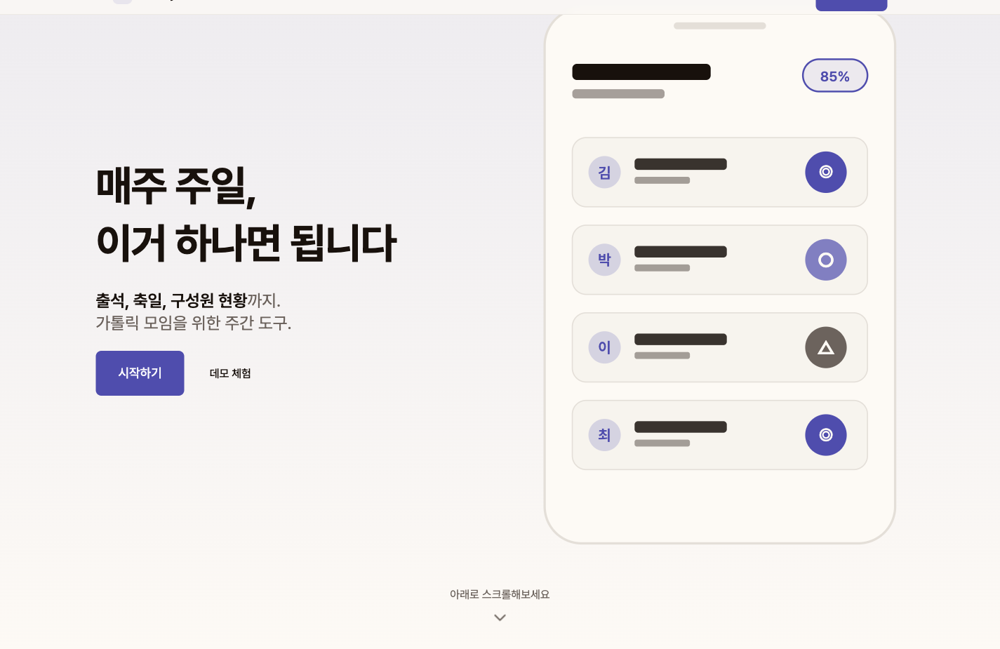

홈페이지와 업무 시스템 개발
누가 어떤 목적으로 사용할지부터 정리합니다. 소개할 내용과 필요한 업무 화면을 살펴보고, 관리 기능이 필요한지와 어디까지 구현할지 함께 정합니다.
상담 예: 회사 소개 홈페이지 / 회원 관리 / 업무 관리 화면SOFTWARE FOR YOUR EVERYDAY WORK
홈페이지 제작, 업무 관리 시스템 개발과 업무 자동화.
대표 개발자가 직접 듣고, 문제의 핵심을 빠르게 정리합니다.
어떤 일이 불편한지, 무엇이 달라져야 하는지 함께 짚고,
필요한 기능을 정해 실제 화면으로 확인하며 만듭니다.
개발 용어나 기획서 없이, 지금 하시는 일부터 들려주세요.
01 / HOW WE WORK
고객의 업무 설명을 필요한 화면과 기능으로 연결합니다.
누가 어떤 순서로 일하고, 어느 순간 불편한지 묻습니다. 쓰고 있는 화면과 자료를 함께 보며 반복되는 문제와 바라는 결과를 짚습니다.
들은 내용을 화면 흐름과 기능 목록으로 정리해 의도와 맞는지 확인합니다. 가능한 방법과 제약을 설명하고, 우선순위와 개발 범위를 함께 정합니다.
상담한 대표 개발자와 중간 화면을 보며 실제 업무에 맞는지 확인합니다. 확인 시점은 미리 정하고, 바꿀 내용이 생기면 비용과 일정에 미치는 영향을 설명한 뒤 협의합니다.
합의한 기능과 제외 항목, 일정과 비용은 문서로 남깁니다. 운영 비용은 개발 비용과 구분하고, 검수 기준과 인계 범위, 오류 수정 및 유지보수 조건도 계약 전에 정합니다.
02 / WHAT WE DO
현재 환경과 필요한 기능, 일정과 예산을 살펴 범위를 정합니다.
누가 어떤 목적으로 사용할지부터 정리합니다. 소개할 내용과 필요한 업무 화면을 살펴보고, 관리 기능이 필요한지와 어디까지 구현할지 함께 정합니다.
상담 예: 회사 소개 홈페이지 / 회원 관리 / 업무 관리 화면지금 쓰는 엑셀과 자료, 실제 업무 순서를 살펴봅니다. 반복되는 입력과 취합 중 자동화가 가능한 부분을 검토하고, 사람이 확인할 부분과 개발할 범위를 나눕니다.
상담 예: 엑셀 처리 / 데이터 취합 / 보고서 / 알림현재 시스템의 구조와 연결된 서비스, 불편한 점을 확인합니다. 기존 기능을 유지할 수 있는지, 변경과 연동에 어떤 제약이 있는지 검토한 뒤 진행 범위를 제안합니다.
상담 예: 검색 개선 / 외부 서비스 연동 / 시스템 이전03 / SELECTED WORK
운영 중인 대표 서비스와 여러 프로젝트의 개발 경험입니다.
학생 명단을 한 명씩 다시 입력하거나, 출석 통계를 따로 집계하는 수고를 줄입니다. 엑셀 명단을 가져와 현장에서 휴대폰으로 출석을 기록하고 통계까지 확인하는, 운영 중인 주일학교 출석 관리 서비스입니다.

담당자의 운영 요구를 화면과 기능으로 구체화합니다.
소식, 일정과 사진을 누가 어떻게 관리하는지 파악하고, 필요한 항목과 기능을 정리합니다. 말로 설명한 요구를 화면 시안으로 옮겨, 담당자가 원하는 운영 방식과 맞는지 함께 확인합니다.
개발 경험: 콘텐츠 편집과 게시, 회원과 거래 및 일정의 통계 API 11개, Google / Kakao 로그인, 알림과 파일 업로드.
보고서용 자료를 일일이 모으지 않도록 수집을 자동화했습니다.
외부 데이터를 정기적으로 수집해 이메일 알림과 엑셀 보고서로 확인하도록 만들었습니다. 발주 판단에는 현재 재고뿐 아니라 배송 중 수량과 도착 예정일까지 반영했습니다.
개발 경험: 데이터 수집 배치, 보고서 다운로드, 거래명세서, 엑셀 일괄 처리와 재고 동시 수정 처리.
연결된 서비스의 수정 부담을 줄이기 위해 기존 검색 호출 방식을 유지했습니다.
기존 서비스가 검색을 요청하는 방식을 유지하며 검색 API 4개를 새 서버로 이전했습니다. 인증과 물류 분야에서는 로그인 인증, 번역, 환율과 배송 조회를 연결했습니다.
개발 경험: 검색 API 호환성 유지, 데이터 검증, FIDO / WebAuthn 인증, 외부 API 연동과 데이터베이스 전환.
04 / CONSULTATION FAQ
필요한 일과 현재 상황부터 함께 정리합니다.
네. 지금 하시는 일과 불편한 상황을 평소 쓰는 말로 설명해 주세요. 대표 개발자가 필요한 질문을 드리고, 이해한 내용을 화면 흐름과 기능 목록으로 정리해 다시 확인합니다. 쓰고 있는 자료가 있으면 함께 보고, 자료가 없어도 상담을 시작할 수 있습니다.
대표 개발자가 상담과 개발을 직접 담당합니다. 상담에서 정리한 기능과 범위를 문서로 남기고, 개발 중에도 같은 내용을 기준으로 화면을 확인합니다. 바로 확답하기 어려운 기능은 검토한 뒤 가능 여부를 안내합니다.
포함 기능과 제외 항목, 일정과 금액을 먼저 합의합니다. 이후 기능을 추가하거나 범위를 바꾸면 비용과 일정에 미치는 영향을 설명하고 협의한 뒤 진행합니다. 서버와 외부 서비스의 운영 비용도 개발 비용과 구분해 안내합니다.
개발 전에 중간 확인 시점과 대상을 정합니다. 시안과 개발 중인 화면을 보며 요청한 내용이 맞는지 확인하고 의견을 나눕니다. 최종 검수에서는 합의한 기능이 실제 이용 흐름에서 동작하는지 함께 확인합니다.
계정, 소스와 운영 자료 중 무엇을 어떤 방식으로 전달할지 계약 전에 정합니다. 공개와 인계 시에는 합의한 자료와 사용 안내를 전달하고, 관리 방법을 설명합니다.
오류 수정의 대상과 기간, 접수 방법을 계약 전에 정합니다. 새 기능 추가나 운영 중 유지보수는 오류 수정과 구분해 범위와 비용을 협의합니다.
상담할 수 있습니다. 기존 화면과 사용 흐름, 데이터와 오류를 살펴본 뒤 개선 가능 범위와 필요한 이전 작업을 정합니다.
05 / LET’S TALK
어느 순간 불편한지, 어떻게 달라지면 좋을지 알려주세요.
대표 개발자가 직접 듣고 필요한 질문부터 드리겠습니다.
이메일 버튼을 누르면 문의 항목이 담긴 메일 작성 창이 열립니다.